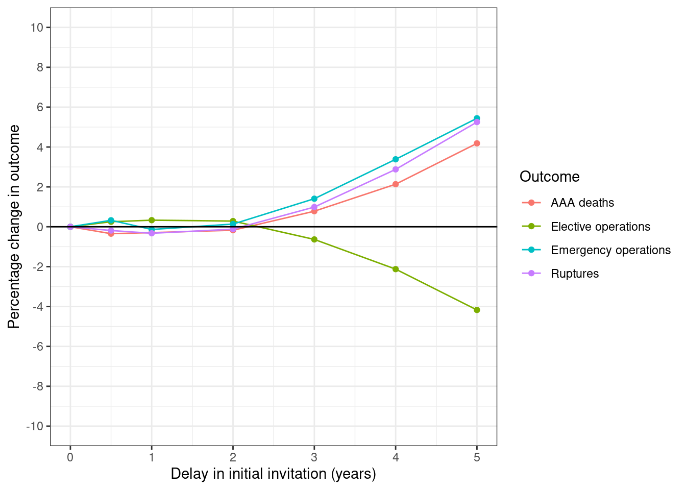
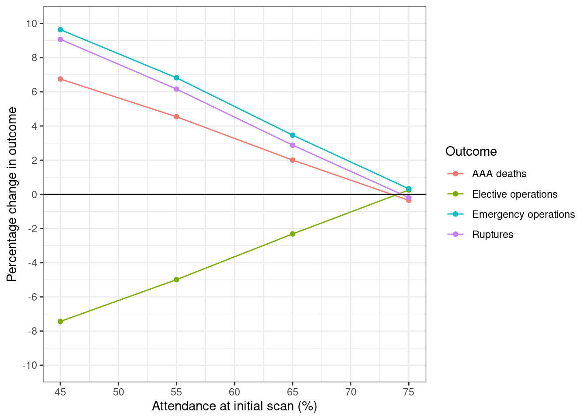
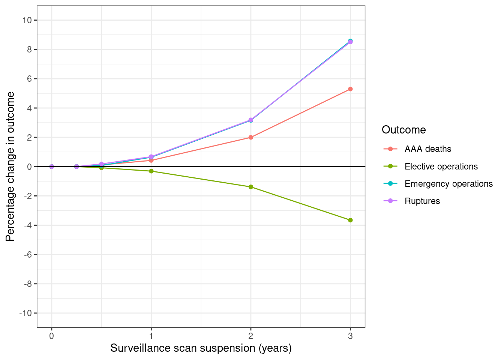
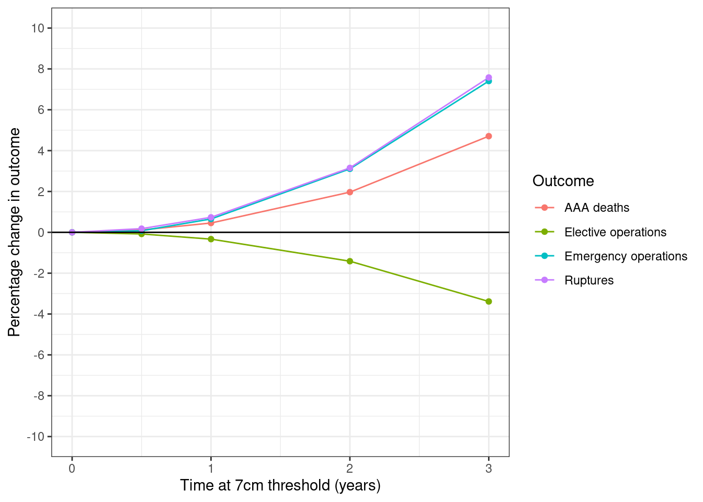
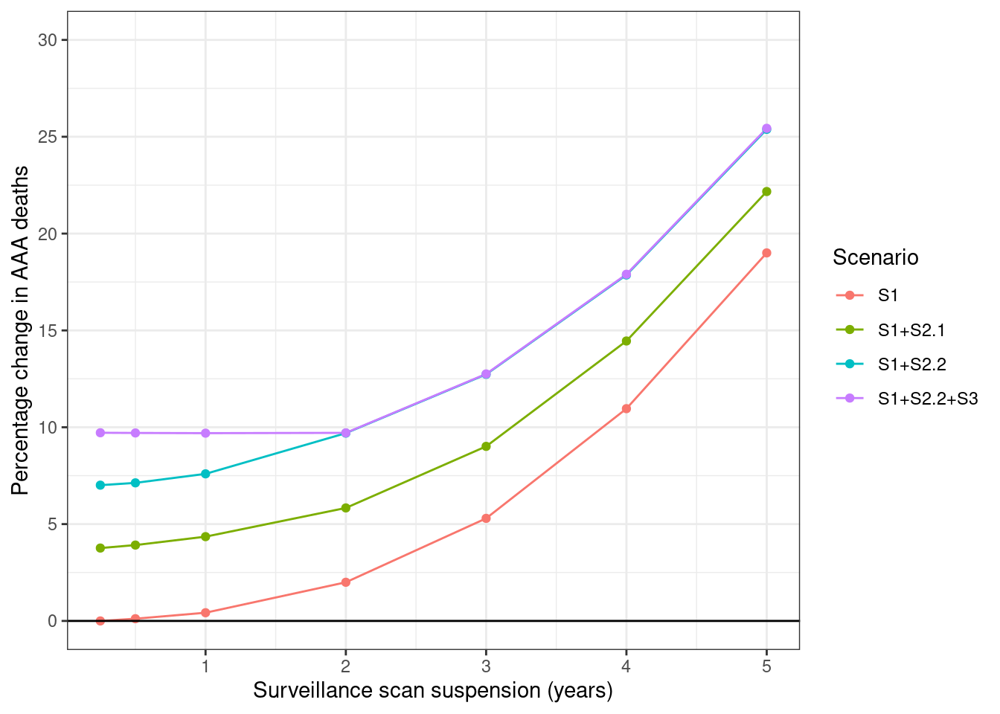

library(dplyr)
Attaching package: 'dplyr'The following objects are masked from 'package:stats':
filter, lagThe following objects are masked from 'package:base':
intersect, setdiff, setequal, unionlibrary(ggplot2)
library(tidyr)Amy Heather
This script assumes you have already run the scenarios in models/ and saved those results to .csv files which we here then process to generate the results from the paper.
Attaching package: 'dplyr'The following objects are masked from 'package:stats':
filter, lagThe following objects are masked from 'package:base':
intersect, setdiff, setequal, union# Path to output folder
outputs = "../output"
# Paths to output files
files <- list(
y65_s1_1k ="output_65yo_scen1_1k.csv",
y65_s1_10k = "output_65yo_scen1_10k.csv",
y65_s1_100k = "output_65yo_scen1_100k.csv",
y65_s1_1m = "output_65yo_scen1_1mil.csv",
y65_s1_2m = "output_65yo_scen1_2mil.csv",
y65_s2 = "output_65yo_scen2.csv",
surv_s0 = "output_surv_scen0.csv",
surv_s0_aorta = "output_surv_scen0_aaadeath_aortasize.csv",
surv_s1 = "output_surv_scen1.csv",
surv_s1_aorta = "output_surv_scen1_aaadeath_aortasize.csv",
surv_s2 = "output_surv_scen2.csv",
surv_s3 = "output_surv_scen3.csv",
surv_s4a = "output_surv_scen4a.csv",
surv_s4b = "output_surv_scen4b.csv",
surv_s4c = "output_surv_scen4c.csv",
tab2 = "tab2.csv",
tab3 = "tab3.csv",
fig1 = "fig1.png",
fig2 = "fig2.png",
fig3 = "fig3.png",
fig4 = "fig4.png",
fig5 = "fig5.png",
intext1 = "intext1.csv",
suptab2 = "suptab2.csv",
supfig3 = "supfig3.png"
)
# Apply file.path to each element in list to create path to file in outputs
paths <- lapply(files, function(filename) file.path(outputs, filename))# Import files
y65_s1_1k <- read.csv(paths$y65_s1_1k)
y65_s1_10k <- read.csv(paths$y65_s1_10k)
y65_s1_100k <- read.csv(paths$y65_s1_100k)
y65_s1_1m <- read.csv(paths$y65_s1_1m)
y65_s1_2m <- read.csv(paths$y65_s1_2m)
y65_s2 <- read.csv(paths$y65_s2)
surv_s0 <- read.csv(paths$surv_s0)
surv_s0_aorta <- read.csv(paths$surv_s0_aorta)
surv_s1 <- read.csv(paths$surv_s1)
surv_s1_aorta <- read.csv(paths$surv_s1_aorta)
surv_s2 <- read.csv(paths$surv_s2)
surv_s3 <- read.csv(paths$surv_s3)
surv_s4a <- read.csv(paths$surv_s4a)
surv_s4b <- read.csv(paths$surv_s4b)
surv_s4c <- read.csv(paths$surv_s4c)make_tab <- function(df,
scale_to,
n_person=1000000,
groupvar="delayscr",
decreasing=FALSE) {
#' Create section of tables from the article
#'
#' Create table with a count of excess deaths and excess emergency operations
#' with increasing delays in the simulation.
#'
#' @param df Dataframe - results from the model
#' @param scale_to Integer - number of expected people in actual population,
#' which we scale our results to (so it reflects the number of outcomes
#' anticipated in a population of that size)
#' @param n_person Integer - number of people in the simulation model
#' @param groupvar String - column with group names (i.e. colour in figure)
#' @param decreasing Boolean - whether to sort group decreasing
#'
#' @return tab2 Dataframe - excess deaths and emergency operations
#'
#' @examples
#' make_tab(y65_s1_1m, 1000000)
# Sort dataframe by grouping variable (not using dplyr as it didn't work
# when needed to parse the string column name with !!, and just did no sort)
df_sort <- df[order(df[,groupvar], decreasing=decreasing),]
rownames(df_sort) <- NULL
# Remaining processing steps...
tab2 <- df_sort %>%
# Calculate the total number of emergency operations
mutate(total_emer = emerevar + emeropen) %>%
# Keep relevant columns
select(!!groupvar, aaadead, total_emer) %>%
# Scale to number of deaths if population size was as expected in real life
mutate(scaled_dead = round(scale_to*(aaadead/n_person)),
scaled_emer = round(scale_to*(total_emer/n_person))) %>%
# Calculate excess (compare to time 0, but set negative to 0)
mutate(excess_dead = pmax(scaled_dead - first(scaled_dead), 0),
excess_emer = pmax(scaled_emer - first(scaled_emer), 0)) %>%
# Combine (so its formatted like the article)
mutate(excess_dead_emer = paste0(excess_dead, " (", excess_emer, ")")) %>%
# Keep relevant columns
select(!!groupvar, excess_dead_emer)
return(tab2)
}
get_pct_change <- function(df, ordervar) {
#' Get percentage change in the four outcomes (for use in figures)
#'
#' @param df Dataframe with results from model
#' @param ordervar String - column to order dataframe by (as percentage
#' change will be against the first row in the dataframe)
#'
#' @return fig_df Wide-format dataframe with percentage change added
# Sort dataframe by ordering variable (not using dplyr as it didn't work
# when needed to parse the string column name with !!, and just did no sort)
df_sort <- df[order(df[,ordervar]),]
rownames(df_sort) <- NULL
fig_df <- df_sort %>%
# Calculate the total number of emergency and elective operations
mutate(total_emer = emerevar + emeropen,
total_elec = elecevar + elecopen) %>%
# Calculate percentage change from timepoint 0
mutate(pct_dead = (aaadead - first(aaadead)) / first(aaadead) * 100,
pct_elec = (total_elec - first(total_elec)) / first(total_elec) * 100,
pct_emer = (total_emer - first(total_emer)) / first(total_emer) * 100,
pct_rupt = (rupt - first(rupt)) / first(rupt) * 100) %>%
return (fig_df)
}
prepare_fig_df <- function(df, pivotvar) {
#' Prepares dataframe for use in making figure by melting and adding labels
#'
#' @param df Dataframe with results calculated by get_pct_change(), filtered
#' to just the relevant columns
#' @param pivotvar String - name of column that serves as ID and that we keep
#' as a column when melting the dataframe
#'
#' @return fig_df_long Long-format dataframe ready for creating plots
# Define labels
fig_lab = list(pct_dead = "AAA deaths",
pct_elec = "Elective operations",
pct_emer = "Emergency operations",
pct_rupt = "Ruptures")
# Melt dataframe from wide to long and add labels
fig_df_long <- df %>%
pivot_longer(-!!pivotvar) %>%
mutate(label = recode(name, !!!fig_lab, .default = NA_character_))
return (fig_df_long)
}
plot_fig <- function(df, xvar, xlab, savepath,
ylab="Percentage change in outcome",
legendtitle="Outcome", linetype=NULL, xbreaks=NULL,
scale_y=list(limits=c(-10, 10), breaks=seq(-10, 10, 2))) {
#' Plot the figure using ggplot2
#'
#' @param df Dataframe created using prepare_fig_df()
#' @param xvar String - column with data to plot along x axis
#' @param xlab String - label for x axis
#' @param savepath String - file path to save image
#' @param ylab String - label for y axis
#' @legendtitle String - title for figure legend
#' @param linetype String - name of coloumn to change style by, or NULL
#' @param xbreaks Numeric vector of positions for xbreaks, or NULL (which
#' makes it keep the default xbreaks)
#' @param scale_y List with inputs to scale_y_continuous. If you do not want
#' to specify inputs, then set to NULL
# Different plot, depending on whether change line type or not
if (is.null(linetype)) {
p <- ggplot(df, aes(x=!!sym(xvar), y=value, color=label))
} else {
p <- ggplot(df, aes(x=!!sym(xvar), y=value, color=label,
linetype=!!sym(linetype)))
}
p <- p +
geom_line() +
geom_point() +
labs(x=xlab, y=ylab, color=legendtitle) +
{if(!is.null(scale_y)) do.call(scale_y_continuous, scale_y)} +
{if(!is.null(xbreaks))scale_x_continuous(breaks = xbreaks)} +
geom_hline(yintercept=0) +
theme_bw()
# Display plot
print(p)
# Save plot
ggsave(savepath, width=7, height=5)
}
combine_with_surv_s0 <- function(df, groupvar){
#' Combine your chosen scenario with results from surveillance scenario 0
#'
#' @param df Dataframe with model results from a given scenario
#' @param groupvar Column you will want to group with later, so keep along
#' with outcome columns
#' @return df_comb Model results from surv scenario 0 + your scenario
# Define columns to keep (as don't all have same columns, so just filter to
# desired - and alternative would've been to filter to common cols)
cols = c(groupvar, "elecevar", "elecopen", "emerevar",
"emeropen", "aaadead", "rupt")
# Combine scenario 0 with your chosen scenario
df_comb <- rbind(surv_s0 %>% mutate("period" = 0, "dropoutrate" = 0) %>% select(any_of(cols)),
df %>% select(any_of(cols)))
return (df_comb)
}tab2_delay <- make_tab(y65_s1_1m, scale_to=279798) %>%
# Keep subset of results
filter(delayscr %in% c(0.5, 1, 2, 3, 4, 5)) %>%
# Convert time from years to months
mutate(months = paste0(delayscr*12, "m")) %>%
# Keep relevant columns
select(months, excess_dead_emer)
tab2_delay months excess_dead_emer
1 6m 0 (3)
2 12m 0 (0)
3 24m 0 (1)
4 36m 21 (14)
5 48m 56 (35)
6 60m 108 (56)# Just keep rows in scenario 2 where they had a 6 month delay
y65_s2_delay <- y65_s2 %>% filter(delayscr==0.5)
# Generate section of table 2
tab2_attend <- make_tab(y65_s2_delay, scale_to=279798,
groupvar="attend", decreasing=TRUE) %>%
# Don't keep base result
filter(attend != 0.75) %>%
# Convert proportions to percentage
mutate(perc = paste0(attend*100, "%")) %>%
# Keep relevant columns
select(perc, excess_dead_emer)
tab2_attend perc excess_dead_emer
1 65% 61 (32)
2 55% 127 (67)
3 45% 184 (96)Combine the delay and attend sections to produce table 2
# Add empty rows to attendance and rename the results column to be distinct
tab2_attend_fill <- rbind(tab2_attend, tab2_attend[0,][rep(NA, 3),]) %>%
rename(excess_dead_emer_attend = excess_dead_emer)
# Combine into single dataframe
tab2 <- cbind(tab2_delay, tab2_attend_fill )%>%
# Rename columns to be similar to paper
rename("Length of delay to invitation" = months,
"Excess AAA deaths (excess emergency operations) in Model I1*" = excess_dead_emer,
"Attendance rate at primary scan" = perc,
"Excess AAA deaths (excess emergency operations) in Model I2*" = excess_dead_emer_attend)
# Reset index
rownames(tab2) <- NULL
# Save to csv
write.csv(tab2,paths$tab2, row.names=FALSE)
tab2 Length of delay to invitation
1 6m
2 12m
3 24m
4 36m
5 48m
6 60m
Excess AAA deaths (excess emergency operations) in Model I1*
1 0 (3)
2 0 (0)
3 0 (1)
4 21 (14)
5 56 (35)
6 108 (56)
Attendance rate at primary scan
1 65%
2 55%
3 45%
4 <NA>
5 <NA>
6 <NA>
Excess AAA deaths (excess emergency operations) in Model I2*
1 61 (32)
2 127 (67)
3 184 (96)
4 <NA>
5 <NA>
6 <NA>1000 people
res1k <- make_tab(y65_s1_1k, scale_to=279798, n_person=1000) %>%
# Keep subset of results
filter(delayscr %in% c(0.5, 1, 2, 3, 4, 5)) %>%
# Convert time from years to months
mutate(months = paste0(delayscr*12, "m")) %>%
# Keep relevant columns
select(months, excess_dead_emer)
write.csv(res1k, "../../logbook/posts/2024_07_30/65y_s1_tab2_1k.csv", row.names=FALSE)
res1k months excess_dead_emer
1 6m 0 (NA)
2 12m 0 (NA)
3 24m 0 (NA)
4 36m 0 (NA)
5 48m 279 (NA)
6 60m 279 (NA)10,000 people
res10k <- make_tab(y65_s1_10k, scale_to=279798, n_person=10000) %>%
# Keep subset of results
filter(delayscr %in% c(0.5, 1, 2, 3, 4, 5)) %>%
# Convert time from years to months
mutate(months = paste0(delayscr*12, "m")) %>%
# Keep relevant columns
select(months, excess_dead_emer)
write.csv(res10k, "../../logbook/posts/2024_07_30/65y_s1_tab2_10k.csv", row.names=FALSE)
res10k months excess_dead_emer
1 6m 56 (0)
2 12m 0 (0)
3 24m 56 (0)
4 36m 56 (0)
5 48m 140 (0)
6 60m 196 (0)100,000 people
res100k <- make_tab(y65_s1_100k, scale_to=279798, n_person=100000) %>%
# Keep subset of results
filter(delayscr %in% c(0.5, 1, 2, 3, 4, 5)) %>%
# Convert time from years to months
mutate(months = paste0(delayscr*12, "m")) %>%
# Keep relevant columns
select(months, excess_dead_emer)
write.csv(res100k, "../../logbook/posts/2024_07_30/65y_s1_tab2_100k.csv", row.names=FALSE)
res100k months excess_dead_emer
1 6m 0 (6)
2 12m 0 (0)
3 24m 0 (0)
4 36m 5 (6)
5 48m 70 (25)
6 60m 114 (25)1,000,000 people
res1m <- make_tab(y65_s1_1m, scale_to=279798, n_person=1000000) %>%
# Keep subset of results
filter(delayscr %in% c(0.5, 1, 2, 3, 4, 5)) %>%
# Convert time from years to months
mutate(months = paste0(delayscr*12, "m")) %>%
# Keep relevant columns
select(months, excess_dead_emer)
write.csv(res1m, "../../logbook/posts/2024_07_30/65y_s1_tab2_1m.csv", row.names=FALSE)
res1m months excess_dead_emer
1 6m 0 (3)
2 12m 0 (0)
3 24m 0 (1)
4 36m 21 (14)
5 48m 56 (35)
6 60m 108 (56)2,000,000 people
res2m <- make_tab(y65_s1_2m, scale_to=279798, n_person=2000000) %>%
# Keep subset of results
filter(delayscr %in% c(0.5, 1, 2, 3, 4, 5)) %>%
# Convert time from years to months
mutate(months = paste0(delayscr*12, "m")) %>%
# Keep relevant columns
select(months, excess_dead_emer)
write.csv(res2m, "../../logbook/posts/2024_07_30/65y_s1_tab2_2m.csv", row.names=FALSE)
res2m months excess_dead_emer
1 6m 0 (0)
2 12m 0 (0)
3 24m 0 (0)
4 36m 20 (11)
5 48m 50 (31)
6 60m 105 (60)Scenario 1
period elecevar elecopen emerevar emeropen aaadead rupt
1 0.00 334510 163245 10891 37924 140144 131989
2 0.25 334510 163245 10891 37924 140144 131989
3 0.50 334236 163118 10907 37946 140306 132227
4 1.00 333216 163004 10964 38166 140739 132883
5 2.00 328549 162312 11201 39157 142942 136199
6 3.00 319286 160275 11743 41259 147567 143222
7 4.00 305043 156342 12553 44578 155505 154745
8 5.00 286144 149707 13812 49536 166776 171525tab3_s1 <- make_tab(surv_s0_s1, scale_to = 15376, groupvar = "period") %>%
# Keep subset of results
filter(period %in% c(0.5, 1, 2, 3, 4, 5)) %>%
# Convert time from years to months
mutate(months = paste0(period*12, "m")) %>%
# Keep relevant columns
select(months, excess_dead_emer) %>%
# Rename to match article
rename("Length of scan suspension" = months,
"Excess AAA deaths (excess emergency operations) in Model S1" = excess_dead_emer)
tab3_s1 Length of scan suspension
1 6m
2 12m
3 24m
4 36m
5 48m
6 60m
Excess AAA deaths (excess emergency operations) in Model S1
1 2 (0)
2 9 (4)
3 43 (23)
4 114 (64)
5 236 (127)
6 409 (223)Scenario 2
# Combine scenarios 0 and 2.1 or 2.2
surv_s0_s2_1y <- combine_with_surv_s0(
surv_s2[surv_s2$dropoutperiod == 1,], "dropoutrate")
surv_s0_s2_2y <- combine_with_surv_s0(
surv_s2[surv_s2$dropoutperiod == 2,], "dropoutrate")
# Calculate excess deaths and emergency operations
tab_surv_s2_1y <- make_tab(
surv_s0_s2_1y, scale_to = 15376, groupvar = "dropoutrate") %>%
rename(excess_dead_emer_s21 = excess_dead_emer)
tab_surv_s2_2y <- make_tab(
surv_s0_s2_2y, scale_to = 15376, groupvar = "dropoutrate") %>%
rename(excess_dead_emer_s22 = excess_dead_emer)
# Combine into single dataframe
tab3_s2 <- mutate(tab_surv_s2_1y, tab_surv_s2_2y) %>%
# Remove result from dropoutrate 0
filter(dropoutrate != 0) %>%
# Convert dropout rate from proportion to percentage
mutate(dropoutrate = paste0(dropoutrate*100, "%")) %>%
# Rename columns to be similar to paper
rename("Dropout rate/ annum" = dropoutrate,
"Excess AAA deaths (excess emergency operations) in Model S2.1" = excess_dead_emer_s21,
"Excess AAA deaths (excess emergency operations) in Model S2.2" = excess_dead_emer_s22)
tab3_s2 Dropout rate/ annum
1 8%
2 10%
3 12%
4 15%
Excess AAA deaths (excess emergency operations) in Model S2.1
1 46 (24)
2 84 (43)
3 122 (62)
4 176 (91)
Excess AAA deaths (excess emergency operations) in Model S2.2
1 85 (43)
2 153 (79)
3 218 (114)
4 313 (164)Scenario 3
# Get excess deaths and operations
tab3_s3 <- make_tab(surv_s3, scale_to=15376, groupvar="period") %>%
# Reformat period to match article
filter(period != 0) %>%
mutate(period = paste0(period*12, "m")) %>%
# Rename results column
rename("Excess AAA deaths (excess emergency operations) in Model S3" = excess_dead_emer,
"Length of time at 7cm threshold" = period)
tab3_s3 Length of time at 7cm threshold
1 6m
2 12m
3 24m
4 36m
5 48m
6 60m
Excess AAA deaths (excess emergency operations) in Model S3
1 2 (0)
2 10 (4)
3 42 (23)
4 101 (55)
5 179 (98)
6 262 (146)Combine to produce table 3
# Add empty rows to scenario 2 (as has fewer rows in table)
tab3_s2_na <- rbind(tab3_s2, tab3_s2[0,][rep(NA, 2),])
# Combine into single dataframe
full_tab3 <- mutate(tab3_s1, tab3_s3, tab3_s2_na)
# Save to csv
write.csv(full_tab3, paths$tab3, row.names=FALSE)
# Display
full_tab3 Length of scan suspension
1 6m
2 12m
3 24m
4 36m
5 48m
6 60m
Excess AAA deaths (excess emergency operations) in Model S1
1 2 (0)
2 9 (4)
3 43 (23)
4 114 (64)
5 236 (127)
6 409 (223)
Length of time at 7cm threshold
1 6m
2 12m
3 24m
4 36m
5 48m
6 60m
Excess AAA deaths (excess emergency operations) in Model S3
1 2 (0)
2 10 (4)
3 42 (23)
4 101 (55)
5 179 (98)
6 262 (146)
Dropout rate/ annum
1 8%
2 10%
3 12%
4 15%
5 <NA>
6 <NA>
Excess AAA deaths (excess emergency operations) in Model S2.1
1 46 (24)
2 84 (43)
3 122 (62)
4 176 (91)
5 <NA>
6 <NA>
Excess AAA deaths (excess emergency operations) in Model S2.2
1 85 (43)
2 153 (79)
3 218 (114)
4 313 (164)
5 <NA>
6 <NA># Combine scenarios with scenario 0 (except scenario 1, which we did above)
surv_s0_s4a <- combine_with_surv_s0(surv_s4a, "period")
surv_s0_s4b <- combine_with_surv_s0(surv_s4b, "period")
surv_s0_s4c <- combine_with_surv_s0(surv_s4c, "period")
# Calculate scaled excess deaths and emergencies
suptab2_s1 <- make_tab(surv_s0_s1, scale_to=15376, groupvar="period") %>%
rename("Scan suspension only (S1)" := excess_dead_emer)
suptab2_s21 <- make_tab(surv_s0_s4a, scale_to=15376, groupvar="period") %>%
rename("+10% dropout/ annum for 1y (S2.1)" := excess_dead_emer)
suptab2_s22 <- make_tab(surv_s0_s4b, scale_to=15376, groupvar="period") %>%
rename("+10% dropout/ annum for 2y (S2.2)" := excess_dead_emer)
suptab2_s23 <- make_tab(surv_s0_s4c, scale_to=15376, groupvar="period") %>%
rename("+7cm threshold for 2y (S3)" := excess_dead_emer)# Combine into single table
suptab2 <- mutate(suptab2_s1, suptab2_s21, suptab2_s22, suptab2_s23) %>%
# Only keep 6 months +
filter(period >= 0.5) %>%
# Relabel
mutate(period = paste0(period*12, "m")) %>%
rename("Length of scan suspension" = period)
# Save to csv
write.csv(suptab2, paths$suptab2, row.names=FALSE)
# View dataframe
suptab2 Length of scan suspension Scan suspension only (S1)
1 6m 2 (0)
2 12m 9 (4)
3 24m 43 (23)
4 36m 114 (64)
5 48m 236 (127)
6 60m 409 (223)
+10% dropout/ annum for 1y (S2.1) +10% dropout/ annum for 2y (S2.2)
1 84 (43) 153 (79)
2 94 (49) 164 (85)
3 126 (67) 209 (112)
4 194 (106) 274 (147)
5 311 (166) 385 (207)
6 478 (259) 547 (297)
+7cm threshold for 2y (S3)
1 209 (111)
2 209 (111)
3 209 (112)
4 275 (148)
5 386 (207)
6 548 (298)Process results from model into a dataframe to use for plotting.
# Get percentage change
fig1_pct <- get_pct_change(df=y65_s1_1m, ordervar="delayscr") %>%
# Keep relevant columns
select(delayscr, starts_with("pct_"))
# Melt and label dataframe
fig1_df <- prepare_fig_df(fig1_pct, pivotvar="delayscr") %>%
# Drop result from 0.25 months (not included in plot)
filter(delayscr != 0.25)
# Create and save plot
plot_fig(fig1_df, xvar="delayscr", xlab="Delay in initial invitation (years)",
savepath=paths$fig1)
Here, the percentage change in outcome is compared against the outcome at 75% attendance with 0 months delay. Hence, we sort by delay (since that puts that row as first), but when we plot, we then remove that row, and just keep results with 6 months delay.
# Calculate percentage change in four outcomes
fig2_pct <- get_pct_change(df=y65_s2, ordervar="delayscr") %>%
# Drop result whith no delay
filter(delayscr!=0) %>%
# Keep relevant columns
select(attend, starts_with("pct_")) %>%
# Convert attendendance from proportion to percentage
mutate(attend = attend*100)
# Melt and label dataframe
fig2_df <- prepare_fig_df(fig2_pct, pivotvar="attend")
# Create and save plot
plot_fig(fig2_df, xvar="attend", xlab="Attendance at initial scan (%)",
xbreaks=seq(45, 75, 5), savepath=paths$fig2)
fig3_pct <- get_pct_change(df=surv_s0_s1, ordervar="period") %>%
# Drop years 4 and 5
filter(period <= 3) %>%
# Keep relevant columns
select(period, starts_with("pct_"))
# Melt and label dataframe
fig3_df <- prepare_fig_df(fig3_pct, pivotvar="period")
plot_fig(fig3_df, xvar="period", xlab="Surveillance scan suspension (years)",
savepath=paths$fig3)
# Get percentage change for each (when dropout is over 1 year, or over 2 years)
fig4_1_pct <- get_pct_change(surv_s0_s2_1y, "dropoutrate") %>%
select(dropoutrate, starts_with("pct_")) %>%
mutate(period = "1 year")
fig4_2_pct <- get_pct_change(surv_s0_s2_2y, "dropoutrate") %>%
select(dropoutrate, starts_with("pct_")) %>%
mutate(period = "2 years")
# Combine into a single dataframe
fig4_pct <- rbind(fig4_1_pct, fig4_2_pct) %>%
# Remove dropoutrate 0 as not included in plot
filter(dropoutrate != 0)
# Melt and label dataframe
fig4_df <- prepare_fig_df(
fig4_pct, pivotvar=c("dropoutrate", "period")) %>%
# Convert dropout from proportion to percentage
mutate(dropoutrate = dropoutrate*100)
fig4_df# A tibble: 32 × 5
dropoutrate period name value label
<dbl> <chr> <chr> <dbl> <chr>
1 8 1 year pct_dead 2.14 AAA deaths
2 8 1 year pct_elec -1.33 Elective operations
3 8 1 year pct_emer 3.19 Emergency operations
4 8 1 year pct_rupt 3.28 Ruptures
5 10 1 year pct_dead 3.92 AAA deaths
6 10 1 year pct_elec -2.38 Elective operations
7 10 1 year pct_emer 5.81 Emergency operations
8 10 1 year pct_rupt 5.98 Ruptures
9 12 1 year pct_dead 5.65 AAA deaths
10 12 1 year pct_elec -3.42 Elective operations
# ℹ 22 more rows# Get percentage change in outcomes from period 0 thresh 5.5
fig5_pct <- get_pct_change(surv_s3, "period") %>%
select(period, starts_with("pct_"))
# Melt and label dataframe
fig4_df <- prepare_fig_df(fig5_pct, pivotvar=c("period")) %>%
# Filter to max 3 years (as article does not include above that in figure)
filter(period <= 3)
# Create figure
plot_fig(fig4_df, xvar="period", xlab="Time at 7cm threshold (years)",
savepath=paths$fig5)
# Get percentage change for each scenario (have to calculate seperately)
supfig3_s1_pct <- get_pct_change(surv_s0_s1, "period") %>%
mutate(scenario = "S1")
supfig3_s21_pct <- get_pct_change(surv_s0_s4a, "period") %>%
mutate(scenario = "S1+S2.1")
supfig3_s22_pct <- get_pct_change(surv_s0_s4b, "period") %>%
mutate(scenario = "S1+S2.2")
supfig3_s3_pct <- get_pct_change(surv_s0_s4c, "period") %>%
mutate(scenario = "S1+S2.2+S3")
# Combine into a single dataframe
supfig3_pct <- rbind(
supfig3_s1_pct, supfig3_s21_pct, supfig3_s22_pct, supfig3_s3_pct) %>%
# Filter to relevant columns
select(period, scenario, pct_dead)
# Melt and label dataframe
supfig3_df <- prepare_fig_df(supfig3_pct, pivotvar=c("period", "scenario")) %>%
# Modify so scenarios are the label
select(-c("name", "label")) %>%
rename("label" = scenario) %>%
# Remove result from timepoint 0
filter(period != 0)
# Create figure
plot_fig(supfig3_df, xvar="period",
xlab="Surveillance scan suspension (years)",
ylab="Percentage change in AAA deaths",
savepath=paths$supfig3, legendtitle="Scenario",
scale_y=list(limits=c(0, 30), breaks=seq(0, 30, 5)))
## In-text result 1
::: {.cell}
```{.r .cell-code}
# Combine the scenario 0 and 1 results
aorta_size <- rbind(surv_s0_aorta, surv_s1_aorta)
# Empty list to store results
aorta_res <- data.frame()
for (size in c("small", "med", "large")) {
# Filter to aorta size
aorta_df <- aorta_size %>%
filter(aorta_size == size)
aorta_res <- rbind(aorta_res, aorta_df %>%
# Scale results to population of 15,376
mutate(dead_scaled = round(15376*(aaadead/n))) %>%
# Calculate excess deaths (compared with period = 0) and percentage change
arrange(period) %>%
mutate(extra_deaths = dead_scaled - first(dead_scaled),
pct_change = round(
(dead_scaled - first(dead_scaled)) / first(dead_scaled) * 100, 2)))
}
# Tidy and reformat the results table
intext1 <- aorta_res %>%
select(period, aorta_size, dead_scaled, extra_deaths, pct_change) %>%
arrange(period) %>%
rename("years_of_surveillance_suspension" = period)
write.csv(intext1, paths$intext1, row.names=FALSE)
intext1 years_of_surveillance_suspension aorta_size dead_scaled extra_deaths
1 0 small 1750 0
2 0 med 225 0
3 0 large 180 0
4 1 small 1750 0
5 1 med 227 2
6 1 large 187 7
7 2 small 1755 5
8 2 med 235 10
9 2 large 207 27
pct_change
1 0.00
2 0.00
3 0.00
4 0.00
5 0.89
6 3.89
7 0.29
8 4.44
9 15.00:::